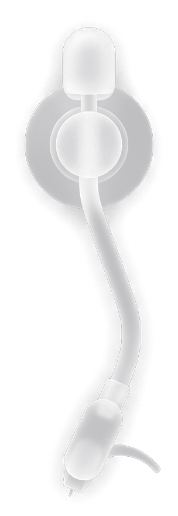

等待连接
—
等待连接
MAC 地址
—
传输协议
A2DP / AVRCP
音频通道
SINK (无线立体声)
低配流畅模式
已关闭
开启通知访问权限
开启后，看板可以读取当前播放的曲目和进度，用于显示歌曲信息和同步歌词。请在电视系统设置中为“蓝牙音乐看板”开启此权限。
前往系统设置
稍后

等待播放蓝牙音乐...
请在手机端播放任意音乐
00:00
00:00
正在检索官方歌词与封面...
A2DP
/
蓝牙音频
/
·
立体声
20px
正在匹配歌词...
▾
歌词来源设置
点击切换
自动推荐
网易云音乐
QQ音乐
酷狗音乐
LRCLIB 全球库
蓝牙实时歌词
律动氛围
50%
正在重启应用...